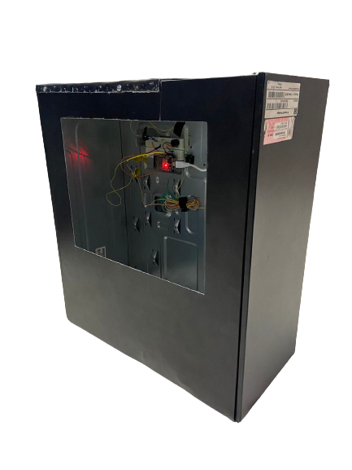
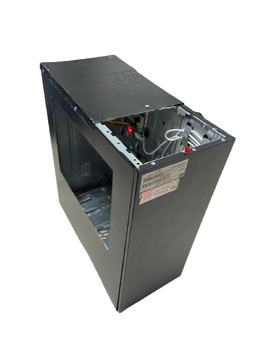

01 /
RÁPIDO
Encontre através do site os locais onde estão nossas lixeiras eletrônicas
02 /
SEGURO
O lixo depositado será descartado da maneira correta e não prejudicará o meio ambiente.
03 /
FÁCIL
Vá até o local de descarte e deposite os eletrônicos que deseja descartar.

